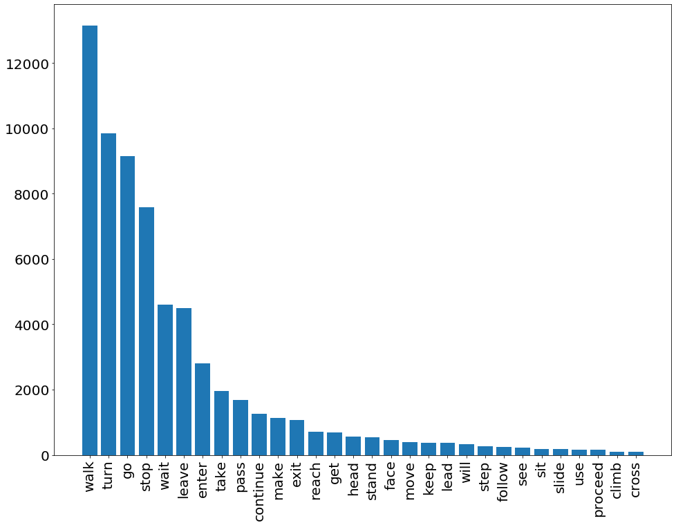
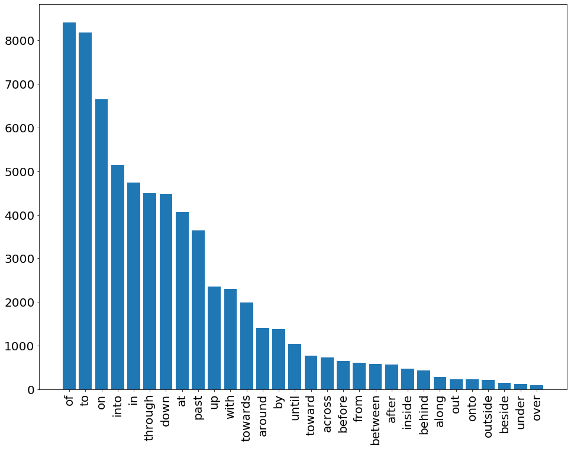
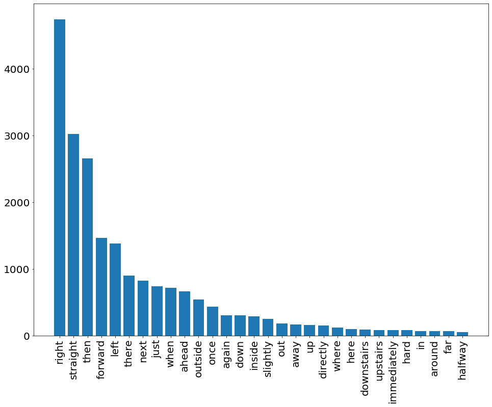

R2R instructions analysis
1 Introduction
This is a work in progress analysis of the route instructions collected in the Room-2-Room dataset (Anderson et al. 2018). The analysed file can be found at the Matterport GitHub repository.
2 Reading the data
Read the training json file and assemble a vocabulary:
DATA = "/home/simka/projects/tasks/R2R/data/R2R_train.json" nlp = spacy.load("en") with open(DATA) as f: data = json.load(f) vocabulary = collections.Counter() for item in data: for token in nlp(" ".join(item["instructions"])): vocabulary[(token.lemma_, token.pos_)] += 1
The first 20 entries in the vocabulary are
vocabulary.most_common(50)
| (the DET) | 63119 |
| (. PUNCT) | 34477 |
| (and CCONJ) | 22691 |
| (walk VERB) | 13142 |
| ( SPACE) | 12956 |
| (turn VERB) | 9839 |
| (go VERB) | 9140 |
| (of ADP) | 8413 |
| (to ADP) | 8175 |
| (, PUNCT) | 7952 |
| (stop VERB) | 7577 |
| (on ADP) | 6652 |
| (stair NOUN) | 6410 |
| (room NOUN) | 6388 |
| (door NOUN) | 6254 |
| (into ADP) | 5144 |
| (left NOUN) | 4779 |
| (right NOUN) | 4773 |
| (right ADV) | 4743 |
| (in ADP) | 4743 |
| (wait VERB) | 4612 |
| (leave VERB) | 4502 |
| (through ADP) | 4489 |
| (down ADP) | 4488 |
| (a DET) | 4368 |
| (-PRON- PRON) | 4210 |
| (at ADP) | 4057 |
| (past ADP) | 3637 |
| (hallway NOUN) | 3404 |
| (doorway NOUN) | 3298 |
| (bedroom NOUN) | 3071 |
| (straight ADV) | 3028 |
| (table NOUN) | 2891 |
| (enter VERB) | 2802 |
| (then ADV) | 2662 |
| (bathroom NOUN) | 2585 |
| (up ADP) | 2357 |
| (with ADP) | 2296 |
| (-PRON- DET) | 2220 |
| (chair NOUN) | 1994 |
| (towards ADP) | 1985 |
| (exit NOUN) | 1961 |
| (take VERB) | 1951 |
| (hall NOUN) | 1735 |
| (pass VERB) | 1677 |
| (front NOUN) | 1644 |
| (step NOUN) | 1600 |
| (kitchen NOUN) | 1534 |
| (forward ADV) | 1467 |
| (around ADP) | 1402 |
3 Category frequencies
def data_for_pos(pos): return [(lemma[0], count) for lemma, count in vocabulary.most_common(500) if lemma[1] == pos]
3.1 Verbs
verb_data = data_for_pos('VERB')[:30] verb_data
| walk | 13142 |
| turn | 9839 |
| go | 9140 |
| stop | 7577 |
| wait | 4612 |
| leave | 4502 |
| enter | 2802 |
| take | 1951 |
| pass | 1677 |
| continue | 1264 |
| make | 1126 |
| exit | 1065 |
| reach | 705 |
| get | 683 |
| head | 552 |
| stand | 535 |
| face | 461 |
| move | 400 |
| keep | 373 |
| lead | 371 |
| will | 323 |
| step | 263 |
| follow | 243 |
| see | 232 |
| sit | 174 |
| slide | 174 |
| use | 161 |
| proceed | 150 |
| climb | 91 |
| cross | 87 |
fig = plt.figure(figsize=(16, 12)) plt.bar([x for x, _ in verb_data], [y for _, y in verb_data]) plt.xticks(rotation='vertical', fontsize=20) plt.yticks(fontsize=20) plt.show;

3.2 Prepositions
adp_data = data_for_pos("ADP")[:30] adp_data
| of | 8413 |
| to | 8175 |
| on | 6652 |
| into | 5144 |
| in | 4743 |
| through | 4489 |
| down | 4488 |
| at | 4057 |
| past | 3637 |
| up | 2357 |
| with | 2296 |
| towards | 1985 |
| around | 1402 |
| by | 1383 |
| until | 1040 |
| toward | 766 |
| across | 728 |
| before | 646 |
| from | 615 |
| between | 586 |
| after | 564 |
| inside | 469 |
| behind | 439 |
| along | 285 |
| out | 231 |
| onto | 225 |
| outside | 216 |
| beside | 152 |
| under | 117 |
| over | 89 |
fig = plt.figure(figsize=(16, 12)) plt.bar([x for x, _ in adp_data], [y for _, y in adp_data]) plt.xticks(rotation='vertical', fontsize=20) plt.yticks(fontsize=20) plt.show;

3.3 Adverbs
adv_data = data_for_pos("ADV")[:30] adv_data
| right | 4743 |
| straight | 3028 |
| then | 2662 |
| forward | 1467 |
| left | 1383 |
| there | 902 |
| next | 831 |
| just | 741 |
| when | 723 |
| ahead | 670 |
| outside | 545 |
| once | 438 |
| again | 311 |
| down | 306 |
| inside | 290 |
| slightly | 257 |
| out | 188 |
| away | 168 |
| up | 167 |
| directly | 157 |
| where | 129 |
| here | 104 |
| downstairs | 94 |
| upstairs | 89 |
| immediately | 86 |
| hard | 86 |
| in | 73 |
| around | 71 |
| far | 69 |
| halfway | 56 |
fig = plt.figure(figsize=(16, 12)) plt.bar([x for x, _ in adv_data], [y for _, y in adv_data]) plt.xticks(rotation='vertical', fontsize=20) plt.yticks(fontsize=20) plt.show;

4 Core vocabulary
4.1 Verbs
- walk
- go
- turn
- pass
If we aim at a richer set, we can add
- proceed
- move
4.2 Prepositions
- to
- towards
- through
- past
- around
- into (?)
4.3 Adverbs
- right
- straight
- forward
- left
- ahead
- next
4.4 Nouns
- All 41 Matterport categories, mapped to WN synsets: https://github.com/niessner/Matterport/blob/master/metadata/mpcat40.tsv
- Of these, 21 are used for the navigation tasks in ObjectNav
(Batra et al. 2020), which says they excluded architectural elements,
and "visually ill defined" objects. The remaining list:
- chair, table, picture, cabinet, cushion, sofa, bed, chest_of_drawers, plant, sink, toilet, stool, towel, tv_monitor, shower, bathtub, counter, fireplace, gym_equipment, seating, clothes.
- From the 21 the following are not so suitable as landmark:
- cushion, towel, clothes
- Potential additional ones from the 41:
- wall
- door (!)
- curtain
- shelving
5 Instruction frames
Let's try to look at the most typical verb phrase structures.
def transform_vp(vp): result = [] for token in vp: pos = token.pos_ if pos == "NOUN": result.append("NOUN") elif pos == "ADJ": result.append("ADJ") elif pos in ["DET", "ADV", "ADP", "PRON", "VERB"]: result.append(token.lemma_) return result
def collect_verb_frames(verb): result = collections.Counter() for item in data: for token in nlp(" ".join(item["instructions"])): if token.pos_ == "VERB" and token.lemma_ == verb: subtree = list(token.subtree) if len(subtree) < 7: result[tuple(transform_vp(subtree))] += 1 return result
5.1 Go
collect_verb_frames("go").most_common(30)
| (go down the NOUN) | 396 |
| (go up the NOUN) | 253 |
| (go to the NOUN) | 221 |
| (go into the NOUN) | 207 |
| (go) | 163 |
| (go straight) | 104 |
| (go through the NOUN) | 80 |
| (go outside) | 66 |
| (go up NOUN) | 52 |
| (go to the ADJ NOUN) | 49 |
| (go to the NOUN NOUN) | 45 |
| (go past the NOUN) | 44 |
| (go inside) | 43 |
| (go down NOUN) | 39 |
| (go into the NOUN NOUN) | 37 |
| (go right) | 35 |
| (go through the ADJ NOUN) | 34 |
| (go left) | 32 |
| (go straight into the NOUN) | 30 |
| (go straight down the NOUN) | 29 |
| (go into the ADJ NOUN) | 26 |
| (go down) | 24 |
| (go forward) | 22 |
| (go past the NOUN NOUN) | 21 |
| (go NOUN) | 19 |
| (go toward the NOUN) | 18 |
| (go towards the NOUN) | 17 |
| (go the NOUN) | 16 |
| (go up the ADJ NOUN) | 15 |
| (go through the NOUN NOUN) | 14 |
5.2 Walk
collect_verb_frames("walk").most_common(30)
| (walk down the NOUN) | 293 |
| (walk) | 231 |
| (walk up the NOUN) | 135 |
| (walk into the NOUN) | 132 |
| (walk through the NOUN) | 130 |
| (walk towards the NOUN) | 112 |
| (walk past the NOUN) | 109 |
| (walk forward) | 77 |
| (walk straight) | 63 |
| (walk down NOUN) | 61 |
| (walk out of the NOUN) | 60 |
| (walk to the NOUN) | 55 |
| (walk toward the NOUN) | 54 |
| (walk up NOUN) | 51 |
| (walk through the NOUN NOUN) | 47 |
| (walk past the NOUN NOUN) | 45 |
| (walk towards the NOUN NOUN) | 44 |
| (walk across the NOUN) | 36 |
| (walk into the NOUN NOUN) | 36 |
| (walk through the ADJ NOUN) | 33 |
| (walk straight down the NOUN) | 33 |
| (walk towards the ADJ NOUN) | 30 |
| (walk past the ADJ NOUN) | 26 |
| (walk ADJ NOUN) | 25 |
| (walk ADJ NOUN NOUN) | 25 |
| (walk down the NOUN ) | 25 |
| (walk toward the ADJ NOUN) | 22 |
| (walk into the ADJ NOUN) | 22 |
| (walk towards NOUN) | 20 |
| (walk past NOUN) | 20 |
5.3 Turn
collect_verb_frames("turn").most_common(30)
| (turn) | 349 |
| (turn right) | 79 |
| (then turn) | 15 |
| (then turn right) | 12 |
| (turn leave) | 12 |
| (turn around) | 5 |
| (turn to the NOUN) | 5 |
| (the NOUN turn) | 4 |
| (turn ADJ) | 3 |
| (turn right into NOUN) | 3 |
| (then turn right into the NOUN) | 3 |
| (turn right into the NOUN) | 3 |
| (immediately turn) | 3 |
| (turn right by the NOUN) | 2 |
| (turn leave through the NOUN) | 2 |
| (then turn left) | 2 |
| (turn right again) | 2 |
| (turn leave at the ADJ NOUN) | 2 |
| (turn right ) | 2 |
| (turn right at the ADJ NOUN) | 2 |
| (turn leave on ADJ NOUN) | 2 |
| (the NOUN then turn) | 2 |
| (turn around and go straight) | 1 |
| (turn into the NOUN NOUN) | 1 |
| (the NOUN then turn leave) | 1 |
| (turn right and enter NOUN) | 1 |
| (turn ninety NOUN to the NOUN) | 1 |
| (turn right and stop) | 1 |
| (then turn right and right again) | 1 |
| (turn right towards the NOUN NOUN) | 1 |
5.4 Pass
collect_verb_frames("pass").most_common(30)
| (pass the NOUN) | 91 |
| (once -PRON- pass the NOUN) | 37 |
| (pass the NOUN on the NOUN) | 37 |
| (pass the NOUN NOUN) | 26 |
| (pass the ADJ NOUN) | 23 |
| (pass the NOUN on -PRON- NOUN) | 19 |
| (pass through the NOUN) | 17 |
| (as -PRON- pass) | 13 |
| (after -PRON- pass the NOUN) | 12 |
| (when -PRON- pass the NOUN) | 10 |
| (pass the NOUN and NOUN) | 10 |
| (pass) | 7 |
| (before -PRON- pass the NOUN) | 6 |
| (straight until -PRON- pass the NOUN) | 6 |
| (pass the ADJ NOUN NOUN) | 5 |
| (pass the NOUN and the NOUN) | 4 |
| (pass NOUN) | 4 |
| (after -PRON- pass the ADJ NOUN) | 3 |
| (right after -PRON- pass the NOUN) | 3 |
| (pass the NOUN NOUN NOUN) | 3 |
| (pass a NOUN) | 3 |
| (pass the NOUN and stop) | 3 |
| (pass by the NOUN) | 3 |
| (when -PRON- pass the NOUN NOUN) | 3 |
| (pass between the two NOUN) | 2 |
| (a NOUN pass the NOUN) | 2 |
| (pass a NOUN on the NOUN) | 2 |
| (pass through NOUN) | 2 |
| (once -PRON- have pass the NOUN) | 2 |
| (pass NOUN NOUN) | 2 |
6 References
Anderson, Peter, Qi Wu, Damien Teney, Jake Bruce, Mark Johnson, Niko Sünderhauf, Ian Reid, Stephen Gould, and Anton Van Den Hengel. 2018. “Vision-and-Language Navigation: Interpreting Visually-Grounded Navigation Instructions in Real Environments.” In Proceedings of the IEEE Conference on Computer Vision and Pattern Recognition, 3674–83. https://doi.org/10.1109/CVPR.2018.00387.
Batra, Dhruv, Aaron Gokaslan, Aniruddha Kembhavi, Oleksandr Maksymets, Roozbeh Mottaghi, Manolis Savva, Alexander Toshev, and Erik Wijmans. 2020. “Objectnav Revisited: On Evaluation of Embodied Agents Navigating to Objects.” Arxiv Preprint Arxiv:2006.13171.